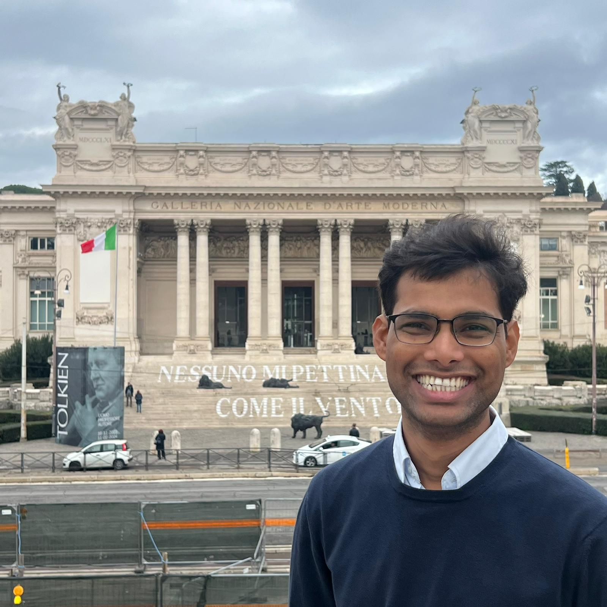

I am a PhD student at Theory of Complex system lab, under the supervision of Dr. Andrew Callan-Jones. Dr. Raphaël Voituriez is my co-supervisor. I am currently investigating the behaviour of Active fluids on curved surfaces, using a combination of both analytical approaches and numerical techniques. Prior to this, I did my masters at TU Dresden in Computational Modelling and Simulation, where I had worked with Dr. Steffen Rulands and Dr. Abhinav Sharma.

Publications
- Shinde, R, Voituriez R, Callan-Jones A. Integer defects, flow localization, and bistability on curved active surface. [Arxiv]
- Caballero-Mancebo, S., Shinde, R., Bolger-Munro, M. et al. Friction forces determine cytoplasmic reorganization and shape changes of ascidian oocytes upon fertilization. Nat. Phys. (2024). [Nature Physics] [ Nature News & Views]
- Shinde, R, Sommer JU, Löwen H, Sharma A. Strongly enhanced dynamics of a charged Rouse dimer by an external magnetic field. PNAS Nexus. 2022 Jul;1(3):pgac119. [Arxiv]
Contact
Laboratoire Matière et Systèmes Complexes10 Rue Alice Domon et Léonie Duquet
75205 Paris Cedex 13
Email : rushikesh.shinde@u-paris.fr
Notes
- Derivation of constitutive equations for active fluids from irreversible thermodynamics. [
 ]
]